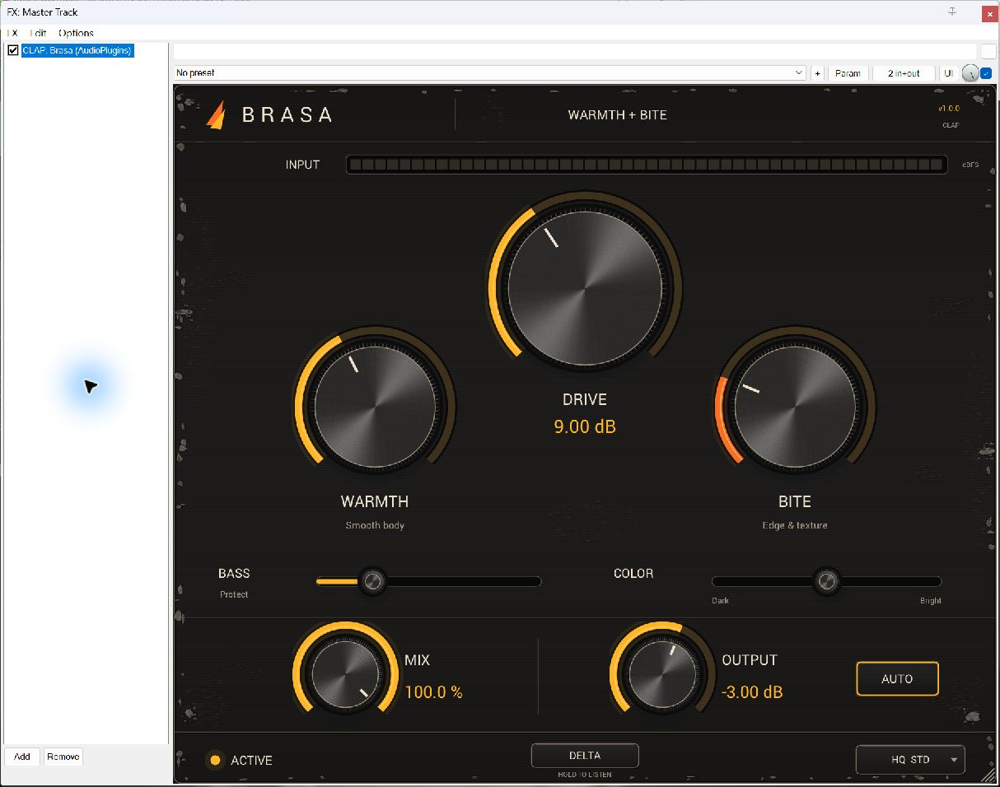

Bring in the body.
Blend soft, asymmetric saturation into the processing path. Start gently on a master or subgroup bus.
INDEPENDENT AUDIO SOFTWARE
A saturator for adding body and edge, from subtle bus colour to a more assertive texture. Master and buses come first. Then drums, bass, synthesizers and guitars.
v1.0.0 · Windows x64 · CLAP · ZIP, 2.24 MiB

SHAPE THE CHARACTER
Blend soft, asymmetric saturation into the processing path. Start gently on a master or subgroup bus.
Add firmer coloration after Warmth. Use either control on its own, or find a balance between them.
Reduce low-frequency excitation of the nonlinear path while retaining bass body. It is not an output high-pass cut.
HEAR THE DIFFERENCE
Hold DELTA to hear the processed output minus the aligned original. Release it to return to the full signal. The difference includes level and tone changes, as well as harmonics.
BUILT FOR THE MIX
BRASA 1.0.0
Download the ZIP, extract it and run the Windows installer with your audio host closed. The installer, interface and documentation are in English.
Download Windows installer ↓